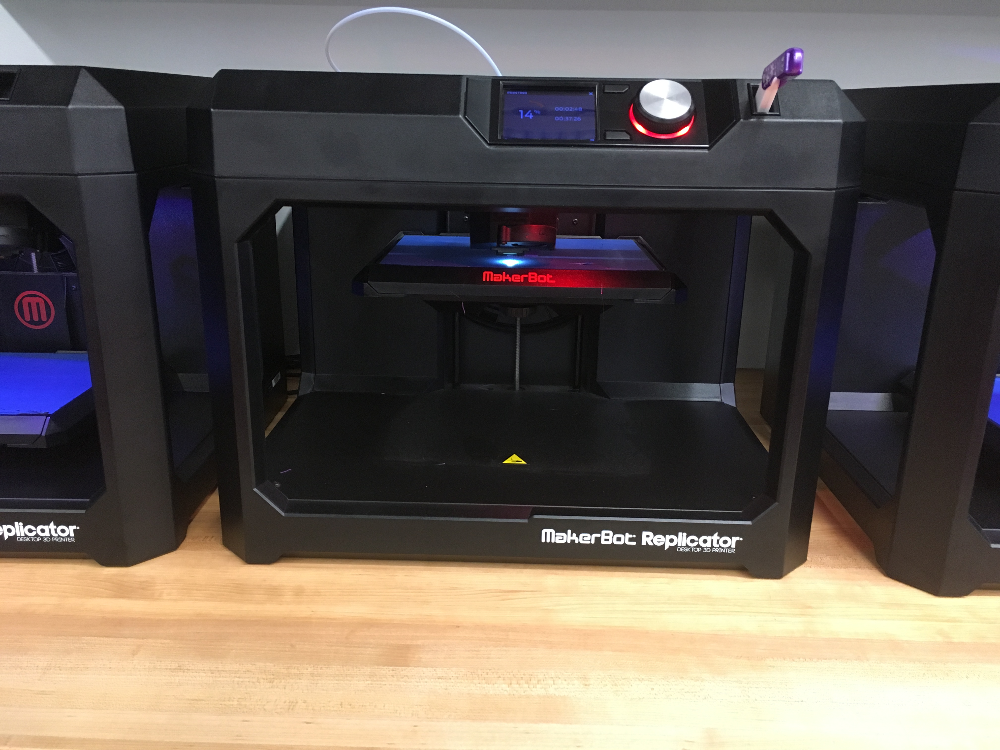
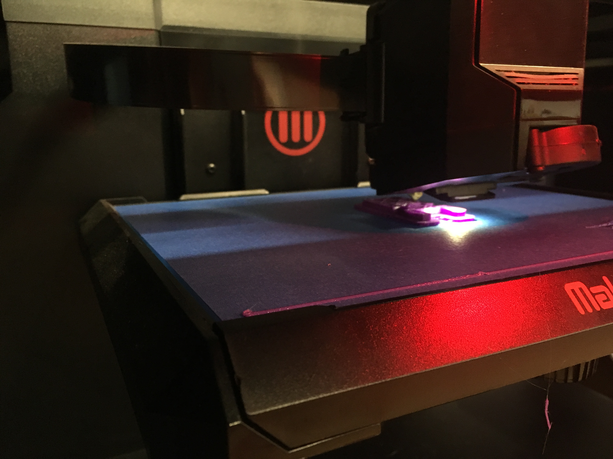

We used a program called Autodesk Fusion 360 to manipulate our CAD designs. It is a fairly easy program to use, once you get the hang
of it. The user interface of this program was pretty self-explanatory, which is always a good thing.
Part 1: Practice Drawings
First, we were given a packet of 50 practice CAD drawings, 6 of which we needed to create using Fusion 360. The designs I chose
were the ones I found interesting to look at and were generally around the middle as far as skill level required to make them. I
decided to go with the middling skill level drawings because I have never worked with Fusion 360 before, so I did not want to make
things more difficult on myself by choosing complicated designs while also trying to work with a brand-new program. However, after
a few drawings, using this program really clicked, and I think I definitely got the hang of it before I moved on to Part 2 of this
assignment.
We were given several projects which we could create using Fusion 360, which we would eventually create using either the 3D
Printer or the Laser Cutter, depending on the project. I chose to create a pin hinge for my project. A pin hinge is a two-part hinge
where one part has a hole through it and the other part is a pin which rotates within that hole. The editing of this
item with Fusion 360 took me some trial and error, because it required me to create two different objects, which I had never done
before. I used the video below to give me some of the pointers I needed in order to create this object.
I used the Makerbot Replicator 3D printer to print this hinge.


Once the hinge was printed, it unfortunately was not functional. Mr. Gerber and I suspect that this is because the two pieces
fused together while printing, causing the hinge to be one solid piece. If I were able to get enough torque, I could probably break
apart the fusion and leave myself with a functional hinge, but since the pieces are so short, this would be a difficult task. If I
succeed in doing this, I will certainly update this page, but at this point, my hinge is still only an immovable whole.